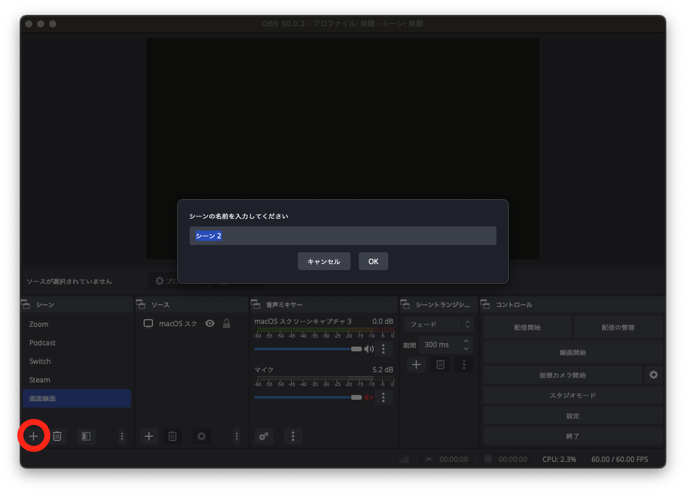
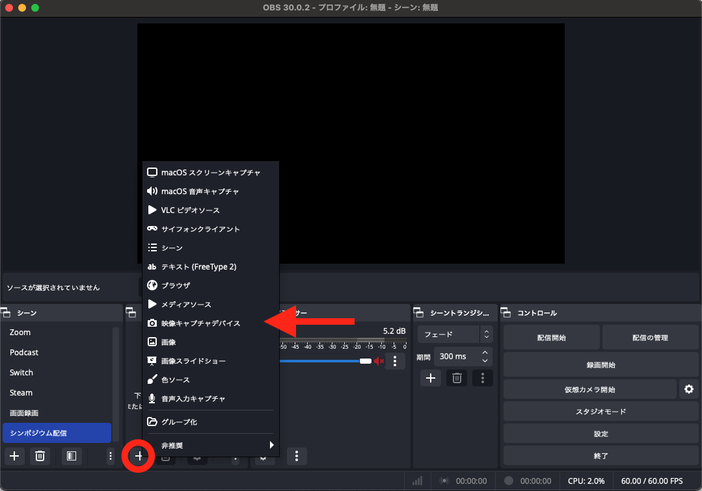
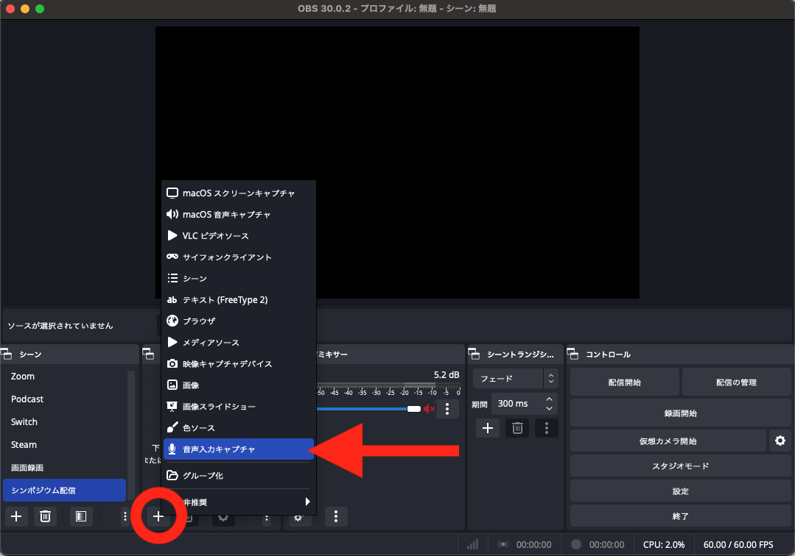
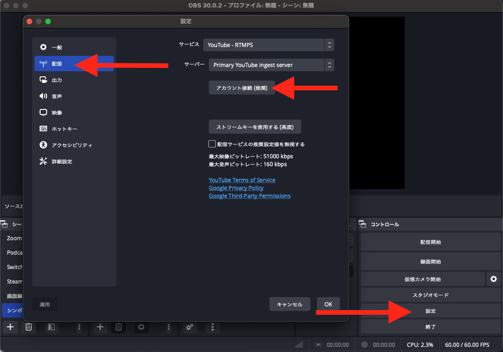
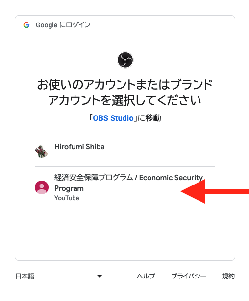
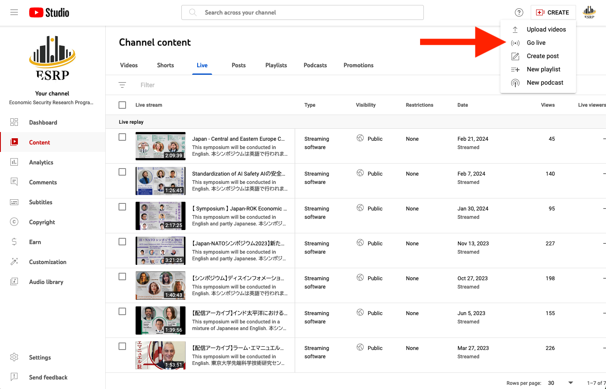
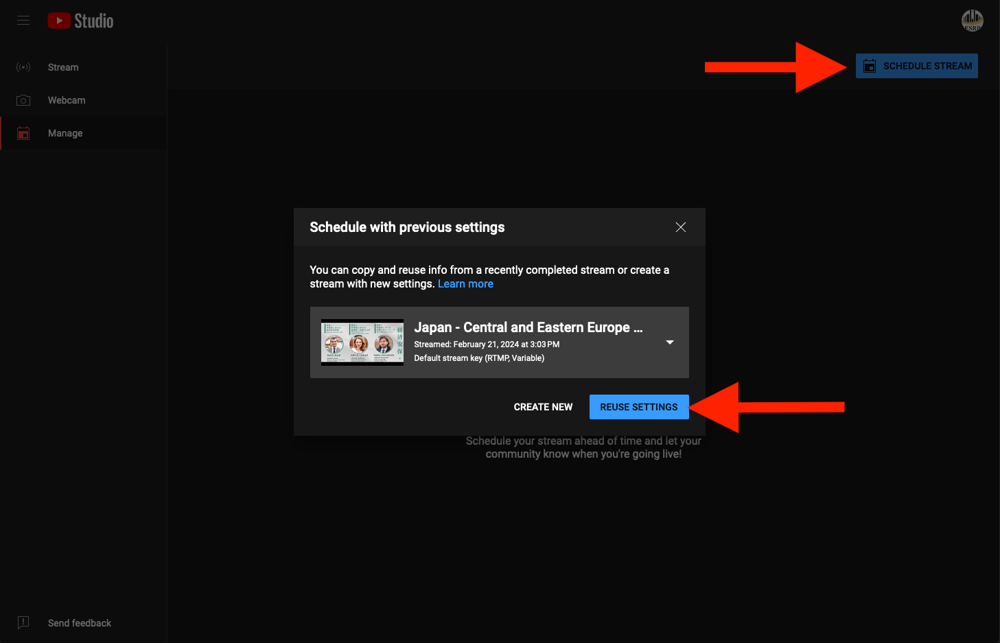
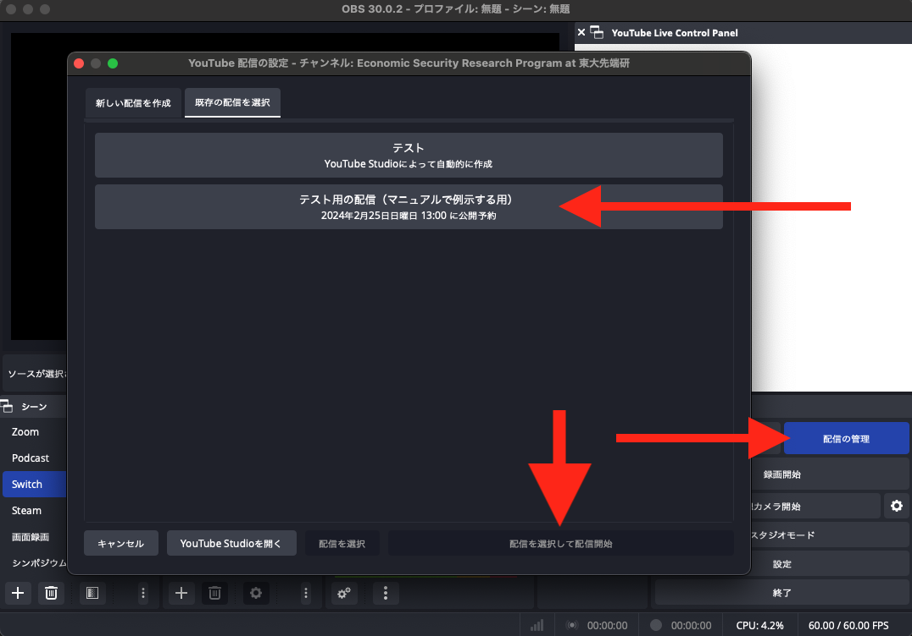

ESRP YouTube 運営マニュアル
YouTube 配信アーカイブの編集とハイライト動画作成
ESRP は 2/25/2024 時点で 過去８回のシンポジウムを開催しており，うち７回で YouTube での同時配信をしました．
事前準備から当日の配信まで，次の３ステップからなります：
本稿では，これらを順番に説明し，最後に第 4 節で配信後の業務をまとめます．
大まかな流れが掴めたのち，登壇者がスライドを用いて発表する場合（第 5 節），Zoom での登壇者がいる場合（第 6 節）について補足します．
OBS Studio は無料の配信ソフトウェアです．これを用いるのが最も簡単です．最も有名なソフトウェアでもあるので，Google 検索をすることで多くの情報が得られます．
こちらのサイト からダウンロードできます．
ENEOS ホールからの配信では，
必要があります．このように，配信に載せたい映像と音声をひとまとまりにしたものを OBS Studio では シーン と呼びます．



Google アカウント側と，OBS Studio 側の両方での設定が必要です．
ESRP の YouTube チャンネルは ブランドアカウント という形態で運用されています．
これは，何か ESRP 専用の Google アカウントが存在して，そこにログインすればアクセスできるというわけではなく，既存の Google アカウントに紐付ける形でアクセス可能になる YouTube チャンネルだ，ということです．
そのため，あなたの既存の Google アカウントに連携する必要がありますので，司馬 まで，Google アカウントのメールアドレスをご通知ください．
OBS Studio で「設定」タブを開き，「配信」を選択します．

ここで「アカウント接続」を押すと，Google アカウントのログイン画面へと移行します．
第 2.1 節でのブランドアカウントとの連携が成功していれば，次のような画面に辿り着くはずです．

ESRP が所有しているキャプチャーボード があります．
通常の方法で PC と HDMI をしても，PC からの映像の出力が出来るのみで，外部の映像情報を PC に取り込むことは出来ません．それにはキャプチャーボードという変換器が必要です．
キャプチャーボードを通じて，USB Type-A で PC に接続することで，外部の映像情報を PC に取り込むことが出来ます．
次のものを受け取ることが出来る必要があります：
そのため，２つの USB Type-A 端子が必要で，これがない場合は UBS ハブ などが必要になるでしょう．
通訳音声を配信後（第 4 節）に必要とする場合，事前に同時通訳の方に「録音した音声ファイルの提供をお願いします」とシンポジウム前に連絡しておきましょう．
通例，後日共有リンクをメールによって音声ファイルを提供していただけます．
また，Zoom での登壇者がいる場合（第 6 節）は，それに関連する打ち合わせも必要になります．
YouTube Studio 側での設定と，OBS Studio 側での読み込みとの，２つのステップが必要です．
YouTube Studio にログインし，「コンテンツ (Content)」から「ライブ配信 (Live)」を選択します．
右上の CREATE から，Go live を選択します．

すると，配信設定画面に移りますので，ここで配信のタイトル・説明文・サムネイルを最新のものに変更し，配信開始時刻を設定します．

第 3.3.1 節で正しく設定できていれば，次のように OBS Studio からも確認できるはずです：

最後に「配信を選択して配信開始」を押すと，配信が開始されます．
配信中に気をつけるべきことは主に次の２つです：
配信後，アーカイブは自動で YouTube 上に公開状態で残ります．1
従来，NHK の同時通訳の方から，日本語訳（場合によっては英訳）の音声を，２トラック提供いただいて来ました．
これを後ほど，YouTube に日本語バージョンとしてアップロードするのに使います．
シンポジウム当日の配信を除いた YouTube の運営については，次の記事を参照ください．
登壇者がスライドで発表を行う場合，同一の PC 上ならばスライドの画面を配信に載せることも可能です．
しかし，発表用のスライドを事前に提供していただける例は少なく，また話しながら自分で操作したいとなると，配信用の PC と分けることになります．
スライドの内容は，カメラを１つ挟んで配信に載せることになります．
しかし，同じスライドを事前に配信用 PC に載せ，手元で操作することで，会場のスライドの内容と同様のものが配信に載せられるようになります．
こうした方が，配信のアーカイブとしての価値が数倍に跳ね上がるでしょう．
この場合は話が単純になります．PC のメモリが 16 GB 以上あれば，問題なく実行可能でしょう．
Zoom での登壇者がいる場合，Zoom と OBS Studio を連携することで，Zoom の画面を配信に載せることが可能です．
ほとんどの場合，この場合に該当することになります．
この場合，音声を直接配信に載せるには，同時通訳の方にご協力願う必要があります．
問題がある場合は手動で非公開にする必要があります．↩︎